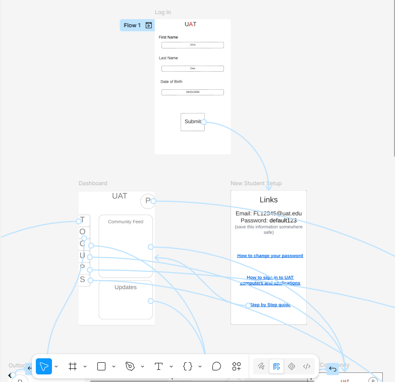
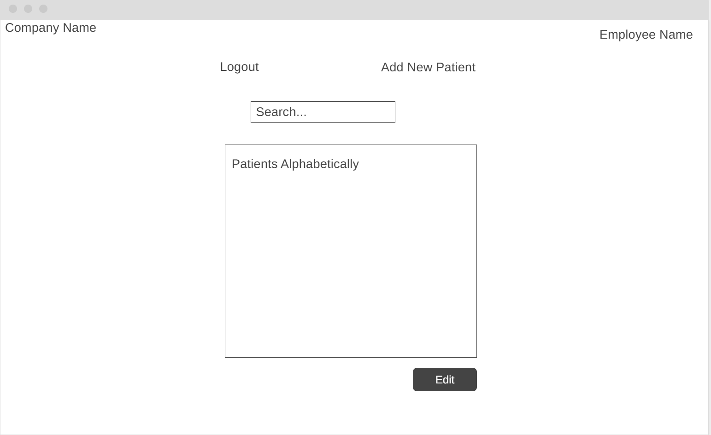

A mobile app for UAT students to have all of their resources from Teams, to Canvas, to
Community Posts, all in one place!

A database for school nurses to track the medical care of their students, ranging from
injury reports to administered medicine like an inhaler or allergy pill.
These projects analyze and address issues and attempt to solve them through software solutions.
Project #1:
This project addresses the problem of incoming UAT students having difficulty locating all of their resources.
New students have to navigate using Outlook, Teams, Canvas, Discord, and every school profile on different social
media apps to recieve all of their information, updates, and schoolwork. This app centralizes all of those tools into
one place so students can easily access their schoolwork, community posts, and updates.
Project #2:
This project addresses the problem of school nurses not being able to accurately track student health information
such as injuries, medications, medication schedules, and care logs. Many schools still use outdated systems of thick
physical books that make finding updated information, like when a student last recieved a dose of medicine, tedious. This
uncertainty makes care difficult or altogether inaccessible. This infirmary log streamlines medical logging and makes it
possible for school administration to confidently manage student information, and provide accurate care.